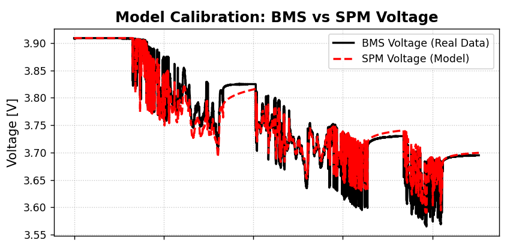
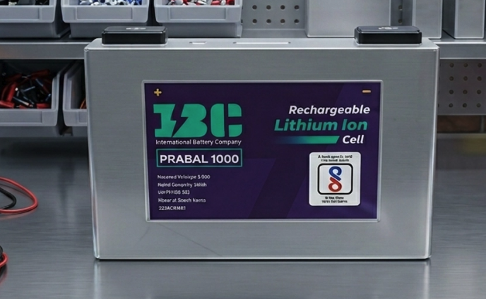
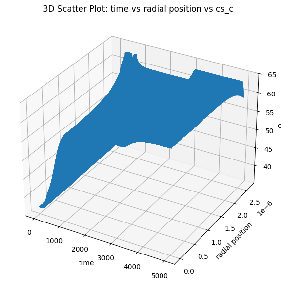

Avkalan Labs
Research and Development Intern
December 2025 — April 2026
My Experience
My internship at Avkalan Labs was my first professional experience working in battery modelling and simulation, and it became a period where I learned a lot both technically and personally.
The internship started with something that was new for me even before the technical work began. This was my first experience attending a professional recruitment process involving both an HR interview and a technical interview. Going through those interviews, discussing my projects and technical understanding, and eventually getting the opportunity to join Avkalan made the internship especially memorable for me.
From December 2025 to April 2026, my core work involved predicting battery voltage under real, dynamic charge-discharge conditions rather than idealized operating conditions. I worked on improving the PINNSTRIPES neural network codebase so that it could accurately capture battery voltage behaviour during rapidly changing charge and discharge cycles.
Alongside this, I built a custom Single Particle Model (SPM) numerical solver from scratch, using the Finite Difference Method (FDM) to solve solid-state diffusion. The solver was developed to output both cell voltage and internal concentration profiles under real-world, dynamic BMS current loads.
I then used this custom SPM solver to simulate actual BMS operating conditions for a 50 Ah prismatic cell. Through this work, I was able to bring the maximum voltage prediction error down to 80 mV.
What made this internship even more memorable was that the technical work was happening alongside everything else. In December, I was also captaining the IIT Tirupati Athletics Team at the Inter IIT Sports Meet, which meant there were days when I went directly from training and team responsibilities into debugging diffusion equations and working on the model.
From January to April, academics, sports, and the internship continued in parallel. Managing all three at the same time pushed me to become much better at managing my time and deciding what needed attention first. Interestingly, that same semester also ended with my highest CGPA yet.
Looking back, the internship was much more than just learning battery modelling. It gave me my first real experience of working in a professional environment, going through a professional interview process, dealing with difficult technical problems, and managing several responsibilities at the same time.


